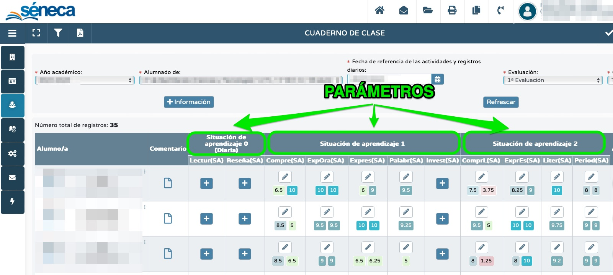
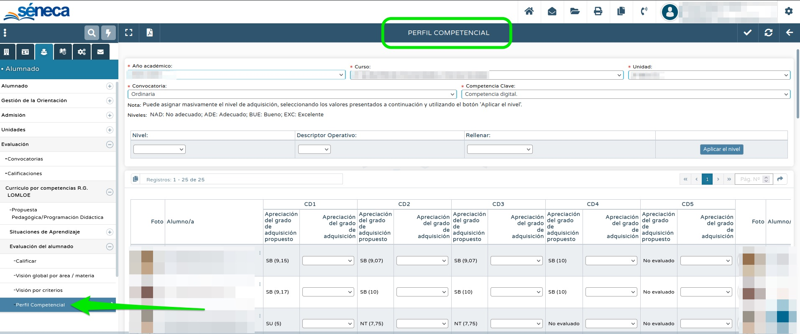

Problemas técnicos:
Si no tengo grabada en Séneca mi programación didáctica, ¿puedo usar el cuaderno?
Sí, se puede usar el cuaderno sin haber grabado la programación en Séneca y sin tener situaciones de aprendizaje elaboradas en Séneca. Son tres elementos (programación didáctica, situaciones de aprendizaje y cuaderno) que están interconectados, pero su uso es independiente.
El único elemento de la programación didáctica que sí es necesario tener en cuenta es el método de cálculo de la calificación, pues determina cómo Séneca va a realizar el cálculo de su propuesta de nota final. El método de calificación que viene por defecto es el de "media aritmética" y si queremos cambiarlo debemos hacerlo en la programación didáctica. Aquí tienes más información.
En mi centro nadie usa el cuaderno. ¿Puedo usarlo yo?
Por supuesto. El cuaderno es una herramienta disponible para todo el profesorado que desee usarla, independientemente de si sus compañeras / os la usan o no.
Quiero empezar a usar el cuaderno, pero no me salen mis grupos. ¿Por qué?
Para poder usar el cuaderno, es imprescindible que previamente hagamos dos cosas:
- tener nuestro horario grabado en Séneca:

- tener nuestros grupos cargados:
Si no te salen tus grupos, es muy posible que se deba a uno de estos dos factores.
Si me doy de baja, ¿puedo pasarle mi cuaderno al interino / a que me sustituya? ¿Y lo recuperaré cuando me reincorpore?
Sí, por supuesto. La persona que te sustituya deberá pedirle a un miembro del equipo directivo que le copie tu cuaderno. Así, continuará tu trabajo sin problema. Y cuando te reincorpores será necesario repetir el proceso: un miembro del equipo directivo deberá copiarte el cuaderno del interino / a a ti nuevamente.
Hay que tener en cuenta que cada copia "machaca" a la anterior, por lo que es importante primero hacer la copia y luego continuar con el uso del cuaderno.
Configuración del cuaderno:
¿Qué son los "parámetros"? ¿Para qué sirven?
Los parámetros son un elemento del cuaderno de Séneca que sirve para englobar actividades evaluables y tenerlas ordenadas. Aunque existen diversas opciones, una de las formas más lógicas es crear un parámetro para cada una de nuestras situaciones de aprendizaje e ir recogiendo en dicho parámetro las actividades evaluables que califiquemos durante la situación de aprendizaje. Así, podemos crear un parámetro llamado "situación de aprendizaje 1" para nuestra primera situación de aprendizaje, "situación de aprendizaje 2" para la segunda, etc. Aquí tienes más información.

¿Cuál es la diferencia entre un parámetro "diario" y uno "no diario"?
Existen dos tipos de parámetros:
- diarios: sirve para introducir actividades evaluables que vayamos a calificar varias veces en días distintos, es decir, el cuaderno "archivará" la nota que metamos un día para que al siguiente el recuadro esté en blanco y podamos introducir otra nota una vez más.
- no diarios: sirve para introducir actividades evaluables que vayamos a calificar solo una vez. Esta nota permanecerá siempre en el recuadro, por lo que no podremos introducir ninguna otra en dicho recuadro.
¿Puedo crear un "acceso rápido" para mi cuaderno?
Sí, por supuesto. De hecho, es recomendable crear accesos rápidos para aquellas pantallas de Séneca que usemos con más frecuencia. Para crearlos, hay que seguir esta ruta:
¿Cómo puedo trasladar las actividades de una situación de aprendizaje elaborada en Séneca hasta el cuaderno para poder calificarlas?
El proceso de traslado de actividades desde una situación de aprendizaje hasta el cuaderno es sencillo y rápido. Puedes hacerlo siguiendo las instrucciones de este vídeo:
¿Cómo puedo copiar una situación de aprendizaje del repositorio a mi cuaderno?
Las situaciones de aprendizaje del repositorio están disponibles para que cualquier docente pueda verlas. Para poder copiarlas, es necesario que tengamos en nuestro horario la misma área o materia y nivel, es decir, si este curso estoy dando Lengua Castellana y Literatura en 1º de Bachillerato sí podré copiar todas las situaciones de aprendizaje que haya en el repositorio para Lengua Castellana y Literatura de 1º de Bachillerato. Para hacerlo, basta con seguir esta ruta:
Una vez copiada, la situación de aprendizaje viajará hasta "mis situaciones de aprendizaje" y podremos editarla, añadiendo, quitando o modificando lo que consideremos.
¿Cómo puedo elaborar una situación de aprendizaje en colaboración con mi compañera / o?
Sí es posible. Séneca permite que varios docentes de un mismo equipo educativo colaboren en la elaboración de una misma situación de aprendizaje, creando una situación interdisciplinar. Para ello, basta con que un docente cree la situación de aprendizaje en su Séneca y añada como "participante" al docente o docentes que desee. Esto se hace en la pantalla "identificación/participantes" de la elaboración de la situación de aprendizaje:

¿Cómo puedo copiar mis situaciones de aprendizaje del curso pasado a este?
A partir del curso 2024 / 2025 es posible hacerlo. De cursos anteriores no es posible debido a los cambios de normativa.
¿Puedo "copiar" el cuaderno de un / a compañero / a?
Directamente no. Lo que sí es posible hacer es copiar las situaciones de aprendizaje de un / a compañero / a (si doy el misma área o materia y nivel) y trasladar su secuencia didáctica hasta mi cuaderno.
¿Puedo copiar mi cuaderno del curso pasado?
Sí es posible copiar nuestro cuaderno del curso anterior. Se puede hacer de dos formas:
- copiando las situaciones de aprendizaje del curso anterior y trasladando su secuencia didáctica a nuestro cuaderno,
- copiando actividades evaluables de cursos anteriores y trasladarlas a este curso. Para ello, se puede seguir esta ruta:
¿Puedo trasladar actividades de un grupo a otro o tengo que crearlas una a una?
Sí, las actividades evaluables se pueden trasladar de un grupo a otro. Para ello, es necesario seguir esta ruta:
¿Cómo puedo grabar elementos en "trazabilidad"?
Para poder grabar cualquier elemento en la trazabilidad es necesario ser miembro del equipo directivo o tener el permiso de coordinador. Una vez grabado un elemento, le aparecerá a todo el claustro del centro. La pantalla para su grabación es la de la imagen. Aquí tienes más información.
Uso el cuaderno correctamente, pero la pantalla "visión global" me sale en blanco. ¿Por qué?
Puede deberse a varios motivos:
- El rango de fechas es erróneo. Aquí tienes más información.
- En la programación didáctica no hay ningún método de calificación grabado, por lo que no hace ningún cálculo. Puedes leerlo aquí.
¿Puedo copiar mi programación didáctica del curso pasado?
Por supuesto. Las programaciones didácticas del curso anterior se pueden aprovechar de un curso a otro para no empezar de cero todos los años. Eso sí: hay que saber que si hacemos una copia hoy se machacará todo el trabajo previo que hayamos hecho este curso. Por ello es importante hacer la copia a principios de curso. La pantalla para realizar la copia es esta:
Solamente pueden realizar las copias de las programaciones el equipo directivo o quien tenga el permiso de "coordinador".
¿Cuál es la diferencia entre "elaborador de programación didáctica" y "coordinador"?
Se trata de dos permisos diferentes:
- elaborador de programaciones didácticas: da acceso a la elaboración de la programación didáctica de una o varias áreas o materias de una etapa;
- coordinador: da acceso a la totalidad de las programaciones didácticas de todas las etapas del centro. Además, quien tenga este permiso puede habilitar el de elaborador a otras / os docentes.
Todo el profesorado del centro puede usar el cuaderno sin necesidad de tener ninguno de los permisos anteriores (hace unos años existía el permiso "evaluador", pero se eliminó por operatividad y ya lo posee todo el claustro por defecto). Pero para acceder a la configuración de nuestra programación didáctica sí es necesario tener uno u otro.
El equipo directivo en su integridad posee los permisos de coordinador por defecto sin necesidad de hacer nada.
Las indicaciones para habilitar estos permisos se pueden ver en este vídeo:
Aquí tienes más información sobre este tema.
Comunicación:
¿Las actividades que califique en Séneca las ven las familias por defecto?
No. Por defecto, las actividades evaluables no se comunican a las familias. Si queremos que sí se comuniquen, debemos marcarlo manualmente en su configuración:
¿Cómo puedo comunicar a las familias las notas de una actividad evaluable?
Para comunicar las calificaciones de una actividad evaluable a las familias debemos marcarlo manualmente en su configuración:
¿Puedo usar el cuaderno también para comunicar a las familias alguna incidencia (un comentario, información sobre convivencia, etc.?
Sí, el cuaderno permite también informar a las familias de cualquier cuestión a través de la columna "comentarios". Para ello, primero habilitaremos que esté visible para las familias y posteriormente podremos usarla cuando lo necesitemos. Si no lo habilitamos, podemos usarla igualmente para registrar la información, pero no les llegará a las familias nada.
 |
Evaluación:
¿Es obligatorio el uso del cuaderno de Séneca?
En general no, salvo que esté así estipulado así en el plan de centro. No obstante, la evaluación criterial sí es obligatoria por la normativa LOMLOE (y también lo era en leyes educativas anteriores). Además, debemos tener especial cuidado en el uso de herramientas digitales para la gestión de la evaluación debido a la normativa de protección de datos.
¿Cómo calcula Séneca su propuesta de nota final?
Para el cálculo de su propuesta de nota Séneca hace:
- la media aritmética de las calificaciones de todos los criterios que hayamos calificado hasta el momento (los que no hayamos calificado no los tiene en cuenta),
- para la nota de cada criterio, Séneca emplea el método que hayamos elegido en la programación didáctica (la media de todas las calificaciones, sólo la última nota introducida o la calificación más alta de todas). Aquí tienes más información.
En cualquier caso, es recomendable comprobar si las evaluaciones están bien configuradas en cuanto a su rango de fechas. Aquí tienes más información sobre este tema.
¿Cómo puedo grabar en Séneca la nota de una recuperación?
Si la nota de la recuperación anula la nota anterior, deberemos borrar la antigua previamente y luego grabar la nueva. El modo de borrar la nota antigua depende de si la actividad evaluable está dentro de un parámetro diario o no diario. Si la actividad está dentro de un parámetro no diario, podremos borrarla desde la pantalla del cuaderno sin problema. En cambio, si está en un parámetro no diario, debemos seguir esta ruta:
¿Puedo corregir un error en la nota de un / a alumno / a?
Podemos corregir cualquier calificación errónea que hayamos introducido en Séneca. El procedimiento que debemos seguir depende de si la actividad está dentro de un parámetro diario o no diario:
- Si la actividad está en un parámetro diario, debemos seguir esta ruta:
- Si la actividad está en un parámetro no diario, bastará con cambiarla desde la pantalla "cuaderno", borrando la nota errónea e introduciendo la correcta.
¿Puedo crear una actividad solo dirigida para un / a alumno / a NEAE?
Sí, pero solamente si nuestro alumnado sigue el currículo del mismo nivel y es evaluado mediante los criterios de ese nivel. Para ello, en la configuración de la actividad evaluable que creemos especialmente dirigida a este alumnado lo seleccionaremos solo a ellos y ya está. Así crearemos una actividad dirigida solo para nuestro alumnado NEAE.
En cambio, si nuestro alumnado tiene una adaptación significativa y es evaluado mediante criterios de un nivel distinto no es posible crear actividades en el cuaderno de Séneca.
¿Puedo usar el cuaderno para evaluar a mi alumnado NEAE?
Si en un grupo tenemos alumnado NEAE que siga el currículo del mismo área o nivel, sí podemos usar el cuaderno. Crearemos para ellos actividades específicas:
En cambio, si nuestro alumnado tiene una adaptación significativa y es evaluado mediante criterios de un curso distinto no es posible crear actividades en el cuaderno de Séneca, porque aún no incluye currículo de otros niveles distintos al que está matriculado.
¿Puedo trasladar las notas de mi cuaderno hasta la evaluación de forma rápida?
Por supuesto. Si has usado el cuaderno de Séneca durante el curso trasladar la propuesta a la evaluación es fácil y rápido. Además, se puede hacer de forma masiva:
 En cualquier caso, siempre es posible modificar manualmente las calificaciones si queremos cambiarlas por cualquier razón.
En cualquier caso, siempre es posible modificar manualmente las calificaciones si queremos cambiarlas por cualquier razón.
¿Cómo puedo ver el perfil competencial o de salida de mi alumnado?
Esta información solo la pueden ver las / los tutoras / es. Para ello, deberán seguir la ruta ALUMNADO > evaluación > currículo LOMLOE > evaluación del alumnado > perfil competencial. También es posible generar un informe en PDF a través de "documentos que se pueden pedir":

¿Qué ocurre si recibo a un / a alumno / a nuevo / a en mitad del trimestre?
Depende:
- si el / la alumno / a se cambia de grupo dentro del mismo centro (por ejemplo, de 1º A a 1º B), sus calificaciones se guardan y aparecen en la pantalla "visión global". Así, por ejemplo, si el docente de Matemáticas de 1º A usaba el cuaderno, cuando el alumno se matricule en 1º B el docente de Matemáticas de 1º B podrá verlas en su pantalla "visión global" y, a partir de ese momento seguir evaluándolo con normalidad;
- si el / la alumno / a procede de otro centro o de otra comunidad autónoma, será necesario pedir un informe de evaluación a su centro de procedencia e introducir manualmente sus calificaciones.
Si uso el cuaderno de Séneca, ¿podré redondear la nota final?
Sí, sin problema. Hay que tener en cuenta que Séneca siempre propone (según los datos que hemos introducido y la configuración que hemos realizado), pero es el / la docente quien tiene la última palabra. De hecho, en la pantalla "visión global" existen dos columnas: una con la propuesta de Séneca y otra con la decisión del / a docente, siendo esta última la que irá al boletín de notas:
¿Cómo se calcula la nota de la evaluación ordinaria?
La calificación de la evaluación ordinaria no es la media de los tres trimestres (esto supondría confundir "evaluación" con "trimestre"), sino la media aritmética de todos los criterios de evaluación calificados desde el principio de curso hasta el final, haciéndose el cálculo de la nota final de cada criterio según uno de los tres métodos de calificación posibles (media aritmética, la última o la mayor). NumeraTor explica esta cuestión aquí. Esto se debe al carácter continuo de la evaluación.
¿Puedo ponderar los instrumentos con el cuaderno de Séneca?
No. El desarrollo normativo de la LOMLOE en Andalucía no lo permite al establecer que los referentes fundamentales para la evaluación son los criterios de evaluación y no los instrumentos: "[La evaluación] tomará como referentes los criterios de evaluación de las diferentes materias curriculares, a través de los cuales se medirá el grado de consecución de las competencias específicas" (art. 10 de la Orden de 30 de mayo de 2023, que desarrolla el currículo de ESO). Puedes leerlo aquí.
¿Puedo ponderar los criterios de evaluación en Séneca?
No. El desarrollo normativo de la LOMLOE en Andalucía no lo permite, estableciendo de forma explícita que todos los criterios aportan lo mismo a su competencia específica correspondiente: "Los criterios de evaluación contribuyen, en la misma medida, al grado de desarrollo de la competencia específica, por lo que tendrán el mismo valor a la hora de determinar su grado de desarrollo" (art. 11 de la Orden de 30 de mayo de 2023, que desarrolla el currículo de ESO). Puedes leerlo aquí.